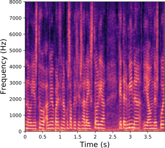
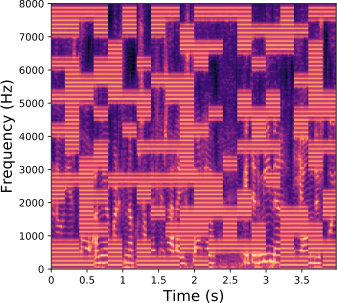
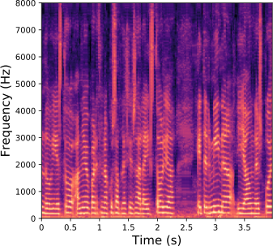
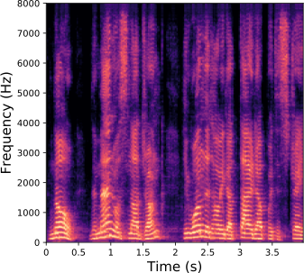
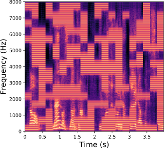
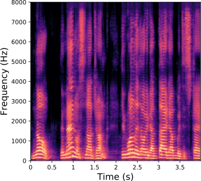
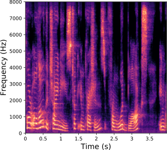
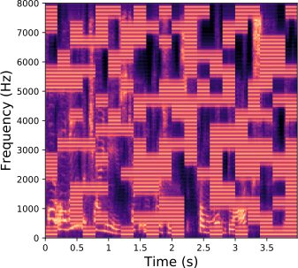
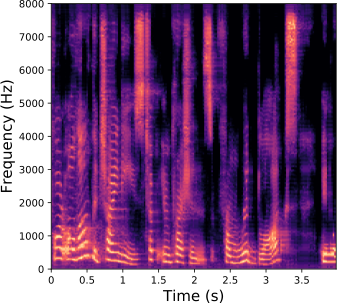

Samir Sadok1 Simon Leglaive1 Renaud Séguier1
1CentraleSupélec, IETR UMR CNRS 6164, France
Recent years have seen remarkable progress in speech emotion recognition, thanks to advances in deep learning techniques. However, the limited availability of labeled data remains a significant challenge in the field. To overcome this, self-supervised learning approaches have emerged as promising solutions. This paper focuses on self-supervised methods based on Masked AutoEncoder (MAE) to learn efficient speech representations. We propose a Vector Quantized Masked AutoEncoder (VQ-MAE-S), an adaptation of existing MAE methods for speech. By integrating the MAE into the VQ-VAE architecture, the VQ-MAE-S achieves better reconstruction quality for masked patches compared to speech MAE methods that use the L1/L2 loss function. We show that our approach, pre-trained on the VoxCeleb2 dataset and refined on emotional speech data, outperforms existing MAE methods that rely on spectrograms or mel-spectrograms as input representations.
Qualitative Results|
Original  |
Masked  |
SpecMAE |
VQSMAE (ours)  |
|  |  |  |
|  |  |  |